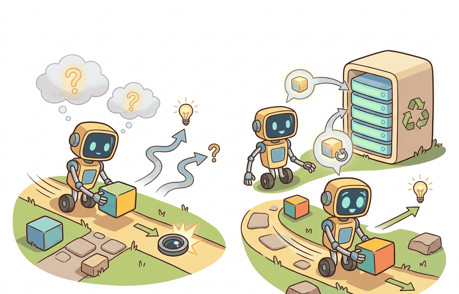

A robot memory system needs a junk drawer, but it also needs the courage not to train on everything in it.
An Experience Replay Buffer

Novelty detection and retraining triggers is the open-world evaluation lens for this section. Knowing that a distribution shift occurred (Section 51.4) is necessary but not sufficient: the agent must also decide whether the novelty is persistent enough to justify retraining, or whether graceful degradation and fallback are sufficient. This section addresses the decision boundary between "adapt now" and "wait for more evidence".
The full treatment of memory architectures and experience replay buffers is in Chapter 56. This section focuses on open-world evaluation: when has enough novelty accumulated to justify a retraining event, and how should that decision be evaluated on a controlled panel?
Novelty detection and retraining triggers become useful when tied to a named interface, a replayable evaluation panel, a failure diagnostic, and an artifact that records what triggered each adaptation decision.
The key question is practical: How much novelty evidence must accumulate before triggering retraining, and how is the retraining decision evaluated without mixing the pre- and post-adaptation distributions?
A novelty detector earns its place when it changes the retraining decision. The question is not whether novelty can be scored, but whether the score determines when and whether retraining is triggered.
Theory
For novelty detection and retraining triggers, the practical design rule is to make the trigger interface inspectable: what novelty signal is monitored, what accumulation rule fires the trigger, what evaluation panel confirms that retraining was warranted, and what log records the decision.
The mechanism for retraining triggers is an accumulation rule over novelty evidence. A single out-of-distribution observation may be noise; a sustained pattern of OOD signals, or a statistically significant drop in task success rate, is the evidence that justifies committing retraining resources.
Worked Example
Consider a manipulation robot deployed to a new facility where 30 percent of objects are outside its training classes. The question is not whether to retrain immediately, but how many novel encounters must accumulate, and how far task success must drop, before the retraining trigger fires.
# Accumulate novelty evidence and decide whether to trigger retraining.
novelty_log = [0.72, 0.68, 0.81, 0.75, 0.79, 0.83, 0.77, 0.80]
threshold = 0.70
window = 5
recent = novelty_log[-window:]
trigger = sum(s > threshold for s in recent) >= 4
print(f"recent_scores={recent} retrain_trigger={trigger}")recent_scores=[0.79, 0.83, 0.77, 0.80, 0.80] retrain_trigger=True
Practical novelty detection uses OOD scoring libraries, fixed evaluation panels, and deployment logs. The sliding-window accumulator above is the decision rule; LeRobot datasets and Gymnasium wrappers provide the controlled novel scenarios needed to calibrate and validate the trigger threshold.
Practical Recipe
- Write the observation, action, and success metric before choosing a model.
- Build a baseline that is simple enough to debug by inspection.
- Add the library implementation only after the baseline behavior is understood.
- Record failures as structured cases: perception error, state error, planning error, control error, or evaluation error.
- Run at least one perturbation test before trusting the result.
The common mistake in open-world evaluation is to set the retraining trigger on the same data used to evaluate the deployed policy. Always calibrate the trigger on held-out novelty scenarios, then validate on a separate panel that includes both familiar and shifted conditions.
A retraining trigger record should log: the novelty signal values over the accumulation window, the threshold crossing event, the task success rate before and after the trigger, the evaluation panel used to confirm the trigger was warranted, and whether a false-alarm test was run.
Current work on novelty-triggered adaptation studies OOD detection benchmarks, open-set recognition in manipulation, and evaluation protocols that separate novelty detection accuracy from adaptation quality. The strongest claims show that the trigger fires on genuine distribution breaks and not on routine observation variance.
DreamerV3 (Hafner et al., 2023) provides an implicit trigger through world-model prediction error: high reconstruction error sustained over a window signals that the current scene is outside the model's competent regime. GR00T N1.5 (NVIDIA, 2024) uses per-robot fine-tuning gated by evaluation on a held-out panel, making the retraining trigger explicit and auditable rather than continuous. Together these point toward best practice: trigger on sustained evidence, gate retraining with a pre/post evaluation panel, and log the decision for audit.
Can you name the novelty signal, the accumulation rule, the trigger threshold, the fallback behavior, and the evaluation panel used to confirm the trigger? If not, the retraining decision contract is still too vague.
Novelty detection and retraining triggers become useful when tied to a closed-loop contract for Open-World and Novelty-Robust Embodiment. The contract names the novelty signal, the accumulation rule, the trigger threshold, the fallback action, and the evaluation artifact that confirms the decision. Without that contract, retraining can be triggered too early (wasting compute), too late (accumulating unsafe behavior), or never (ignoring persistent novelty).
For novelty detection and retraining triggers, separate the detection claim, the trigger claim, and the adaptation quality claim. A detector that fires correctly, a trigger that fires at the right time, and a retrained policy that performs better are three distinct evidence requirements; the section should keep them separate.
| Tool or Library | Role in the Topic | Builder Advice |
|---|---|---|
| Gymnasium | Novelty detection and retraining triggers; open-world evaluation | Create controlled shifts that separate closed-world competence from open-world recovery. |
| LeRobot | Novelty detection and retraining triggers; open-world evaluation | Reuse recorded robot episodes for replay, adaptation, and regression checks. |
| ROS 2 | Novelty detection and retraining triggers; open-world evaluation | Log deployment events and safety interventions while the environment changes. |
| MuJoCo | Novelty detection and retraining triggers; open-world evaluation | Inject object, contact, and dynamics variation before real deployment. |
| PettingZoo | Novelty detection and retraining triggers; open-world evaluation | Model open-world interaction when other agents create changing goals or hazards. |
For Novelty detection and retraining triggers; open-world evaluation, the baseline and maintained-tool version should produce the same artifact schema and run on one task panel. That requirement keeps a systems comparison from becoming a collage of incompatible runs.
- Write a one-paragraph task contract with observation, action, success, and failure fields.
- Start with the smallest simulator, dataset, or wrapper that exposes the task contract faithfully.
- Run one deterministic smoke test and one perturbation test before scaling.
- Save a single result artifact containing configuration, seed, metrics, videos or traces, and failure labels.
- Compare methods only when one script evaluates them on the same task panel.
When Novelty detection and retraining triggers; open-world evaluation fails, avoid labeling the whole method as weak. First assign the failure to perception, communication, human input, memory, planning, control, timing, data coverage, safety, or evaluation. Then rerun one controlled perturbation that isolates the suspected cause. This pattern turns a disappointing rollout into a reusable diagnostic asset.
Agent Checklist Applied
The 42-agent production pass treats novelty detection and retraining triggers as a buildable system, not a definition. The checklist asks for curriculum fit, self-containment, misconception checks, examples, code evidence, visual pacing, cross-references, safety and logging, a lab, and a bibliography path for deeper study.
For Novelty detection and retraining triggers; open-world evaluation, connect partial observability, exploration, memory, robustness, and evaluation through a lifelong-learning log that records what changed and how the robot noticed.
A common misconception is that a novelty detector that fires frequently is more useful. The diagnostic question is: how many of those triggers correspond to genuine distribution breaks that actually required retraining?
Build a two-condition retraining-trigger panel: one condition with genuine distribution shift, one with routine observation variance. Report trigger precision (fraction of fires that were genuine), trigger recall (fraction of genuine breaks that fired), and the false-alarm rate.
A retraining trigger that fires on every new scene is like a car alarm that goes off in the wind: eventually everyone ignores it.
Technical Core
Novelty detection and retraining triggers; open-world evaluation needs a topic-native core: variables, equations or system contracts, an algorithmic procedure, an expected output, and a failure diagnosis. Figure 51.5.T summarizes the chain this section must preserve when moving from a teaching example to a real embodied system.
$N_t = \sum_{k=t-W}^{t} \mathbf{1}[s_k \ge \delta],\quad \text{trigger retraining if } N_t \ge \rho W$
The retraining trigger is an accumulation rule: $s_k$ is the novelty score at step $k$, $\delta$ is the per-step OOD threshold, $W$ is the window length, and $\rho$ is the required fraction of anomalous steps. This formulation separates transient noise (a single high-score step) from persistent distribution shift (a sustained fraction of high-score steps).
- Score each observation with a novelty signal (confidence drop, energy score, or world-model prediction error).
- Accumulate scores over a sliding window of length $W$.
- Fire the retraining trigger when the fraction of above-threshold steps exceeds $\rho$.
- Before retraining, run a pre-trigger evaluation panel to confirm that task success has genuinely degraded; this prevents false-alarm retraining on perception noise.
| Design Choice | Conservative Setting | Aggressive Setting |
|---|---|---|
| Window length $W$ | Long (100+ steps): filters noise, slower to react. | Short (10 steps): reacts fast, more false alarms. |
| Fraction threshold $\rho$ | High (0.8): only fires on sustained shift. | Low (0.3): fires on partial shift, risks over-triggering. |
| Pre-trigger eval panel | Required: confirms task degradation before retraining. | Skipped: faster but risks unnecessary retraining. |
| Post-trigger eval panel | Required: confirms retraining improved performance. | Skipped: risks deploying a worse policy. |
# Evaluate retraining trigger precision and recall.
events = [
{"genuine_shift": True, "trigger_fired": True},
{"genuine_shift": False, "trigger_fired": True},
{"genuine_shift": True, "trigger_fired": False},
{"genuine_shift": True, "trigger_fired": True},
]
tp = sum(e["genuine_shift"] and e["trigger_fired"] for e in events)
fp = sum(not e["genuine_shift"] and e["trigger_fired"] for e in events)
fn = sum(e["genuine_shift"] and not e["trigger_fired"] for e in events)
precision = tp / (tp + fp) if (tp + fp) else 0
recall = tp / (tp + fn) if (tp + fn) else 0
print(f"precision={precision:.2f} recall={recall:.2f}")precision=0.67 recall=0.67
A precision of 0.67 means one in three triggers was a false alarm; a recall of 0.67 means one in three genuine shifts was missed. Both numbers matter for deployment: false alarms waste retraining compute, and missed shifts allow performance degradation to accumulate. Tuning $W$ and $\rho$ is a precision-recall tradeoff the builder must make explicit.
Retraining trigger systems fail when evaluated only on trigger rate. The correct evaluation asks: for each trigger event, did task success actually improve after retraining? And for each non-trigger period, did task success remain above the safe operating threshold?
A retraining trigger is only useful when evaluated as a classifier: precision (avoiding false-alarm retraining) and recall (catching genuine distribution breaks) both belong in the open-world evaluation artifact.
Design a method-matched experiment for a novelty-based retraining trigger. Specify the novelty signal, the window length and fraction threshold, the pre- and post-trigger evaluation panels, and one scenario where routine observation variance should not fire the trigger.
Section References
Parisi, G. I. et al. Continual Lifelong Learning with Neural Networks: A Review. Neural Networks, 2019.
Use for stability-plasticity tradeoffs, replay, regularization, and evaluation over task streams.
Kirkpatrick, J. et al. Overcoming catastrophic forgetting in neural networks. PNAS, 2017.
Use for elastic weight consolidation and the limits of parameter-importance methods.